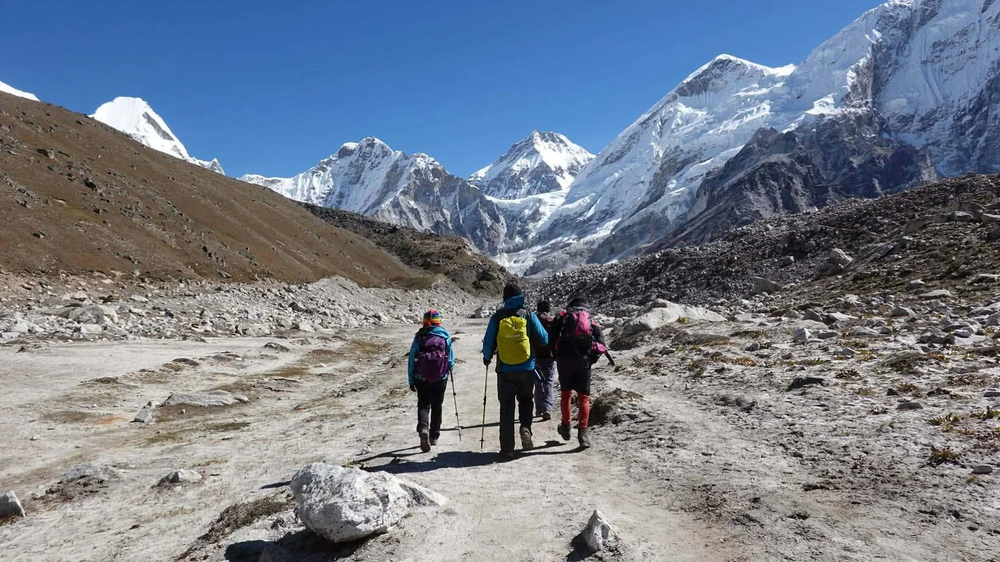
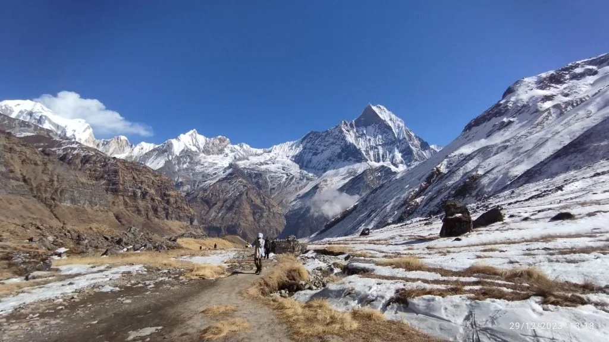
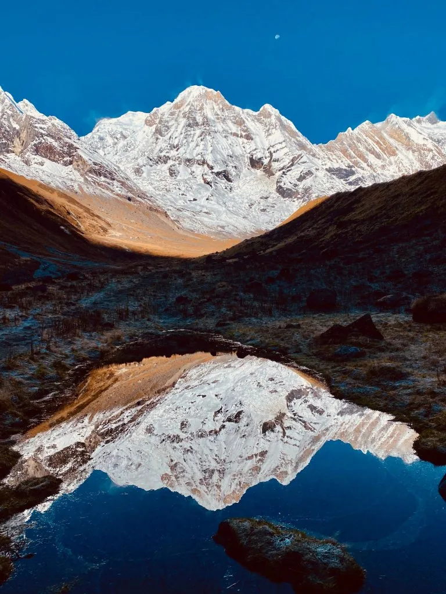

1. The Great Himalayan Dilemma: Everest Base Camp vs. Annapurna Base Camp Overview
Every year, tens of thousands of adventurers from around the world prepare their packs for Nepal with a single burning question: "Should I trek to Everest Base Camp or Annapurna Base Camp?"
Both treks represent the pinnacle of Himalayan teahouse trekking, yet they could hardly be more different in character, topography, physiological demand, and cultural atmosphere. Everest Base Camp (EBC) in the Khumbu region is a grand, high-altitude pilgrimage to the foot of the tallest mountain on Earth (8,848.86m), taking you deep into Tibetan Buddhist Sherpa country and stark, glaciated moonscapes. In contrast, Annapurna Base Camp (ABC)—also known as the Annapurna Sanctuary trek—is a dynamic journey of ecological variety, sweeping from subtropical rhododendron rainforests, bamboo gorges, and terraced Gurung farming hamlets into an enclosed 360-degree high-alpine bowl surrounded by ten 7,000m and 8,000m peaks.
Choosing the right trek depends not merely on which mountain you wish to view, but on your available vacation days, budget, physical conditioning, tolerance for extreme altitude, and preferred travel logistics.
2. Side-by-Side Comparison Matrix: Key Metrics at a Glance
To help you quickly evaluate the core parameters of both journeys, our senior expedition leaders have compiled this comprehensive, head-to-head comparison matrix:
| Expedition Parameter | Everest Base Camp (EBC) | Annapurna Base Camp (ABC) |
|---|---|---|
| Maximum Altitude | 5,364m / 17,598ft (EBC) 5,545m / 18,192ft (Kala Patthar) |
4,130m / 13,549ft (ABC) 3,700m / 12,139ft (MBC) |
| Trekking Duration | 12 to 14 Days (65 km each way / 130 km total) | 7 to 10 Days (approx. 115 km total round trip) |
| Starting Trailhead | Lukla (2,846m) via mountain flight | Nayapul / Birethanti / Jhinu Danda (1,070m–1,760m) |
| Gateway City | Kathmandu (or Ramechhap Airport) | Pokhara (Lakeside leisure city) |
| Altitude Sickness (AMS) Risk | High: 5 consecutive nights above 4,000m; ~50% sea-level oxygen. | Low to Moderate: Only 1 night sleeping above 4,000m. |
| Trail Terrain Style | Gradual river valleys, rocky moraines, boulder scree, permafrost. | Thousands of steep stone steps, river canyons, alpine bowl. |
| Access Logistics | Weather-dependent STOL flight to Lukla (or 14h 4WD jeep). | 25m commercial jet to Pokhara + 2h scenic paved taxi/jeep. |
| Estimated Total Cost | $1,350 – $1,850 USD (Guided full-board package) | $750 – $1,150 USD (Guided full-board package) |
| Primary Cultural Focus | Tibetan Buddhist Sherpas, ancient monasteries, Mani walls. | Gurung and Magar villages, animist traditions, Gurkha heritage. |
| Dominant Mountain Views | Everest (8,848m), Lhotse (8,516m), Nuptse, Ama Dablam, Pumori. | Annapurna I (8,091m), Machapuchare (6,993m), Annapurna South. |
| Permits Required | Sagarmatha National Park + Khumbu Pasang Lhamu Municipality | Annapurna Conservation Area (ACAP) + TIMS Card |
| Overall Difficulty Grade | Strenuous (Extreme altitude & cold) | Moderate to Strenuous (Steep stairs & vertical gain) |
3. Mountain Scenery & Vistas: Khumbu Glacial Majesty vs. The 360° Annapurna Sanctuary

The visual aesthetics of Everest and Annapurna could not be more sharply contrasted. Depending on what style of mountain scenery stirs your soul, one will clearly outshine the other.
Everest Base Camp: Stark, High-Alpine Glacial Empire
The Character: EBC is colossal, raw, and barren. Above the tree line at Namche Bazaar (3,440m), the landscape transitions rapidly into alpine scrub, glacial moraine, and finally a frozen moonscape of gravel and ice.
The Highlights: You are shadowed for days by Ama Dablam (6,812m), universally considered the most aesthetically stunning peak on the planet. You walk along the lateral moraine of the 17km-long Khumbu Glacier and stand next to the chaotic, cracking seracs of the Khumbu Icefall.
The Everest Nuance: Keep in mind that from the actual rock marker at Everest Base Camp, Mount Everest’s true summit pyramid is hidden behind the massive Nuptse ridge! To see the classic, iconic panorama of Everest's black pyramid, you must climb Kala Patthar (5,545m) at sunrise.
Annapurna Base Camp: Botanical Variety to 360° Amphitheater
The Character: ABC offers a richer progression of bioclimatic zones. You begin hiking in subtropical farmland, move through lush moss-draped bamboo and rhododendron rainforests, and cross alpine gorges before entering a completely enclosed mountain sanctuary.
The Highlights: You hike directly beneath Machapuchare (Fishtail, 6,993m)—the sacred, unclimbed mountain of Lord Shiva with its distinct double-horned summit. At Annapurna Base Camp (4,130m), you are standing inside an intimate natural fortress completely walled in by Annapurna I (8,091m), Annapurna South (7,219m), Hiunchuli, and Tent Peak.
The Visual Punch: While EBC feels like looking up at mountains from a high desert valley, ABC feels like being trapped inside a giant, vertical colosseum of glaciers and snow walls.
4. Elevation Profile, High Altitude Exposure & AMS Risk: 5,364m vs. 4,130m

The most critical physiological difference between the two treks is altitude exposure and the risk of Acute Mountain Sickness (AMS). This single factor often dictates who successfully reaches the destination and who must turn back.
The Extreme Altitude Profile of Everest Base Camp
Everest Base Camp is an extreme high-altitude trek from day one:
- High Starting Elevation: You land in Lukla already at 2,846m (higher than many ski resorts in Europe and North America).
- Mandatory Acclimatization Stops: Safe itineraries require two separate two-night acclimatization stops: one in Namche Bazaar (3,440m) and another in Dingboche (4,410m).
- Prolonged Exposure Above 4,000m: Trekkers spend five consecutive nights sleeping above 4,000 meters (Dingboche, Lobuche at 4,940m, and Gorak Shep at 5,164m).
- Oxygen Levels: At Gorak Shep and Everest Base Camp, the effective available oxygen is roughly 50% of sea level. Mild symptoms of altitude sickness (headache, insomnia, loss of appetite) affect up to 60% of trekkers, and helicopter evacuations for HAPE or HACE are a daily occurrence in peak season.
The Forgiving Altitude Profile of Annapurna Base Camp
Annapurna Base Camp is far gentler on your cardiovascular and respiratory systems:
- Low Starting Elevation: The trek begins in the Pokhara foothills at just 1,070m to 1,760m, surrounded by oxygen-rich terraced hillsides.
- Gradual Ascent: The trail ascends steadily over 5 to 6 days. You do not cross the 3,000m mark until Day 4 or 5 at Deurali (3,200m).
- Minimal Time at Extreme Altitude: Trekkers spend only one single night sleeping at high altitude (at ABC, 4,130m). If you feel a mild headache, you can descend 1,800 vertical meters down to Bamboo (2,310m) in just four hours the next morning, instantly curing altitude symptoms.
The First-Timer Rule of Thumb
If you have never hiked above 3,500 meters (11,500 ft) and do not know how your body reacts to low atmospheric oxygen, Annapurna Base Camp is the safer, smarter choice. It allows you to test your altitude response without committing to five days above 4,000m in freezing temperatures.
5. Transportation & Getting There: The Lukla Flight Gauntlet vs. Pokhara Scenic Transit
How you travel from Kathmandu to the start of the trail represents one of the starkest contrasts between the Everest and Annapurna regions.
Everest Logistics: The Unpredictable Lukla Flight
To reach Everest Base Camp, the vast majority of trekkers fly into Tenzing-Hillary Airport in Lukla (2,846m), famously recognized as one of the most thrilling and weather-sensitive mountain airstrips in the world:
- Ramechhap Season Diversion: During peak autumn (October–November) and spring (March–April) trekking seasons, the Civil Aviation Authority of Nepal (CAAN) redirects all Lukla commercial flights to Manthali Airport in Ramechhap. This requires waking up at 1:30 AM in Kathmandu for a 4 to 5-hour bumpy night van ride across rural hill roads before boarding a 15-minute STOL flight to Lukla.
- Weather Delays & Cancellations: Lukla is notorious for cloud cover, high crosswinds, and sudden fog. Flights are frequently grounded for hours or even consecutive days. Every EBC trekker must build at least 2 contingency buffer days into their itinerary.
- Overland Alternative: If flights are completely grounded, the overland alternative is a gruelling 12 to 14-hour 4WD jeep drive from Kathmandu to Salleri/Tham Danda, followed by 2 extra days of uphill walking to Lukla.
Annapurna Logistics: Relaxed, Weather-Proof Travel to Pokhara
In contrast, getting to Annapurna Base Camp is remarkably stress-free:
- Kathmandu to Pokhara: You take a smooth 25-minute commercial jet flight aboard an ATR-72 (Buddha Air or Yeti Airlines) operating multiple times an hour between Kathmandu and Pokhara. Alternatively, comfortable deluxe tourist buses depart daily (7–8 hours along the Prithvi Highway).
- Pokhara Trailhead Access: From lakeside Pokhara, a comfortable 2 to 3-hour private car or 4WD taxi ride takes you directly to the trailheads at Nayapul, Ghandruk, or Jhinu Danda. Weather delays are practically non-existent.
6. Trail Terrain, Physical Demands & The 'Stone Staircase' Battle

When comparing physical difficulty, trekkers are often surprised to learn that while EBC is harder on the lungs and heart, ABC is often much harder on the legs, knees, and joints.
The Annapurna "Stairway to Heaven": Muscular Endurance
The signature feature of the Annapurna trail is its endless thousands of hand-laid stone steps:
- The Ulleri Staircase: Over 3,200 continuous stone steps ascending straight up from Tikhedhunga to Ulleri.
- The Chhomrong Rollercoaster: You must descend 2,500 steep stone steps down to the Chhomrong Khola suspension bridge, cross the river, and immediately climb 2,000 stone steps back up the opposite canyon wall. And on the return hike, you must repeat this in reverse!
- Physical Demand: Intense eccentric strain on the quadriceps, calves, and patellar knee tendons. High-quality shock-absorbing trekking poles and knee braces are indispensable.
The Everest Trail: Gradual Gradients and Glacial Moraine
Everest features comparatively few steep staircases:
- Contoured River Valleys: The trail between Lukla, Phakding, and Namche Bazaar follows broad, gently undulating tracks along the Dudh Koshi river before the famous 2-hour zigzag climb up Namche Hill.
- The High-Altitude Slog: Above Dingboche (4,410m), the trail crosses open alpine plains before navigating the rough lateral moraine of the Khumbu Glacier up to Lobuche and Gorak Shep.
- Physical Demand: The terrain is uneven with loose rocks, talus, and frozen gravel. The primary struggle is not leg burn from stairs, but extreme oxygen starvation where taking 15 steps uphill leaves you gasping for breath.
7. Itinerary Duration & Time Commitment: 14 Days vs. 8–10 Days
Your work holiday schedule is often the deciding factor between the two treks. Here is how the time commitments compare:
| Itinerary Dimension | Everest Base Camp (EBC) | Annapurna Base Camp (ABC) |
|---|---|---|
| On-Trail Trekking Days | 11 to 12 trekking days (including 2 acclimatization days) | 7 to 8 trekking days (or 5 to 6 days via short jeep route) |
| Total Vacation Days Required | 14 to 16 Days (Kathmandu to Kathmandu) | 9 to 11 Days (Kathmandu to Kathmandu) |
| Buffer Days Needed | 2 mandatory days for Lukla weather delays | 0 to 1 buffer day (highly predictable transport) |
| Leisure Time Post-Trek | Limited (most time spent on trail or transit) | Ample (2 full days to relax in lakeside Pokhara) |
The 2-Week Vacation Reality
If you have a strict two-week vacation (14–16 days off work, including international travel time), attempting EBC leaves zero room for flight delays or illness. A single foggy day in Lukla could cause you to miss your international flight home. Annapurna Base Camp fits comfortably within a two-week holiday, allowing you to hike at a relaxed pace and enjoy Pokhara's cafes, boating, and spas before flying home.
8. Teahouse Standards, Heated Rooms & Modern Amenities Along the Trail
Both treks offer established teahouse accommodation, but the style of lodge infrastructure reflects different commercial histories and local park management philosophies.
Everest Teahouses: High-Altitude Luxury vs. Freezing Rooms
Due to heavy international mountaineering investment, Khumbu features some of the most luxurious teahouses in Nepal alongside basic alpine lodges:
- Modern Amenities in the Lower Valley: In Lukla, Phakding, and Namche Bazaar, you can stay in luxury lodges (Yeti Mountain Home), enjoy artisan bakeries, visit authentic espresso bars, and relax in heated dining rooms with electric mattress pads and attached hot showers.
- The High-Altitude Reality: Above Dingboche (4,410m), lodges in Lobuche and Gorak Shep become rustic. Rooms are unheated with paper-thin plywood walls. At night, room temperatures drop to -10°C to -15°C. A -20°C sleeping bag is mandatory.
- Connectivity: Wi-Fi is surprisingly widespread via prepaid Everest Link satellite vouchers, though charging phones and power banks incurs fees of NPR 400 to 600 per device at high camps.
Annapurna Teahouses: Cozy Family Homestays & Strict Sanctuary Codes
Annapurna teahouses have a distinctly warmer, community-driven atmosphere:
- Charming Lower Lodges: Villages like Ghandruk, Chhomrong, and Sinuwa feature picturesque stone lodges with flower gardens, hot solar showers, and cozy dining halls.
- Sanctuary Environmental Regulations: Inside the sacred Annapurna Sanctuary (from Himalaya and Deurali to MBC and ABC), the Annapurna Conservation Area Project (ACAP) strictly caps the number of lodges to prevent environmental degradation. As a result, lodges at ABC are compact, clean, and cooperative. During peak season, trekkers occasionally share multi-bed dorm rooms.
- Heating & Energy: Wood burning is strictly outlawed inside the sanctuary to preserve local forests; lodges rely on clean gas or solar heating.
9. Mountain Cuisine & Hydration: Khumbu Bakeries vs. Annapurna Farm-to-Table
Fueling your body with 3,500 to 4,500 calories per day is essential on both trails. Here is how the food and water dynamics compare:
Food in the Everest Region
- Extensive Menus: Everest teahouses offer remarkably varied menus: pasta, pizza, burgers, Sherpa stew (Syakpa), apple pies, cinnamon rolls, and traditional Dal Bhat.
- Escalating Prices: Because there are no roads in Khumbu, all food must be flown to Lukla and portered or carried by yaks and dzos. Consequently, food prices double between Lukla and Gorak Shep (a plate of Dal Bhat costs NPR 600 in Phakding but NPR 1,200+ in Gorak Shep).
- The Meat Rule: Sherpa Buddhist culture strictly forbids the slaughter of animals in the sacred Khumbu valley. All meat is flown from Kathmandu and carried unrefrigerated for days. Never eat meat above Namche Bazaar to avoid severe food poisoning.
Food in the Annapurna Region
- Farm-to-Table Freshness: Lower Annapurna villages boast fertile organic gardens. Fresh spinach, cabbage, garlic, cauliflower, and potatoes are harvested straight from the garden into your curry.
- Regional Specialities: Fresh Gurung bread (deep-fried golden bread served with honey), handmade momos, fresh apple pancakes, and hot lemon ginger honey tea.
- Eco-Safe Drinking Water: ACAP operates dedicated safe drinking water purification stations at villages like Chhomrong and Sinuwa, providing UV-treated water in reusable bottles to eliminate single-use plastic bottles.
10. Cultural Immersion: Sherpa Buddhist Monasteries vs. Gurung & Magar Villages

Beyond the mountain views, the cultural identity of each region leaves an indelible impression on every traveler.
The Sherpa Buddhist Heritage of Khumbu
Everest is the spiritual heartland of the Sherpa people, who migrated from eastern Tibet over five centuries ago:
- Ancient Monasteries: The trail passes the world-renowned Tengboche Monastery, situated on a high ridge beneath Ama Dablam. Trekkers can sit inside during morning monk chants, enveloped by the smell of butter lamps and sound of Tibetan long horns.
- Sacred Geography: The entire valley is inscribed with Buddhist devotion: hundreds of Mani stones carved with the sacred mantra Om Mani Padme Hum, suspension bridges draped in colorful prayer flags, and historic chortens.
- Mountaineering Royalty: In Namche and Khumjung, you walk in the footsteps of Tenzing Norgay, Sir Edmund Hillary, and generations of elite Sherpa Everest summitters.
The Gurung and Magar Heritage of Annapurna
Annapurna showcases the vibrant culture of the indigenous Gurung and Magar communities:
- The Famous Gurkha Soldiers: Gurung men have served with distinction for over two centuries in the British and Indian Army Gurkha regiments, renowned worldwide for their bravery and loyalty.
- Traditional Stone Hamlets: Villages like Ghandruk feature beautiful stone-paved alleys, slate-roofed cottages, and cultural museums showcasing traditional loom weaving and agricultural heritage.
- The Sacred Abode of Shiva: The Annapurna Sanctuary is considered a sacred natural temple. Mount Machapuchare (Fishtail) is the holy home of Lord Shiva; climbing it is strictly prohibited by law, preserving its untouched spiritual purity.
11. Seasonal Weather Windows: Autumn Clarity vs. Spring Rhododendron Blooms
Both regions share the standard Nepalese trekking seasons, but the seasonal experience differs in climate, temperatures, and floral displays.
| Season | Everest Base Camp (EBC) | Annapurna Base Camp (ABC) |
|---|---|---|
| Autumn (Oct – Nov) The Classic Golden Window |
• Crisp, crystal-clear 100km visibility. • Dry trails; stable flight weather. • Night temps: 0°C to -15°C at Gorak Shep. |
• Flawless mountain clarity. • Golden terraced rice fields in harvest. • Night temps: 5°C to -5°C at ABC. |
| Spring (Mar – May) Wildflowers & Expeditions |
• Everest Base Camp is alive with colorful climber tents and climbing teams. • Warmer days, blooming rhododendrons below Namche. • Mild afternoon cloud build-up. |
• World-class floral spectacle: Massive hillsides of scarlet, pink, and white rhododendrons in full bloom from Ghorepani to Bamboo. • Warmer lower valleys. |
| Winter (Dec – Feb) Crystal Skies & Bitter Cold |
• Crisp, cloudless skies with minimal crowds. • Severe sub-zero cold (-20°C to -25°C at night). • Heavy winter down gear required. |
• Beautiful clear mornings. • High risk of winter avalanche closures in the narrow Deurali to MBC gorge. |
| Monsoon (Jun – Aug) Heavy Rains & Leeches |
• Lukla flights frequently grounded for days. • Cloudy mountain views; muddy trails. • Not recommended. |
• Heavy tropical rainfall in Pokhara foothills. • Prolific leeches in bamboo forests. • Mudslide risks; not recommended. |
12. Permits, Regulations & Entry Paperwork: Khumbu vs. Annapurna Conservation Area
Both trekking destinations require official government permits and entry registrations, but they are administered by completely different authorities.
| Region | Required Official Permits | Cost (2026) | Where Obtained |
|---|---|---|---|
| Everest (Khumbu) |
1. Sagarmatha National Park Entry Permit 2. Khumbu Pasang Lhamu Municipality Entry Permit |
• SNP: NPR 3,000 (~$23 USD) • Khumbu: NPR 3,000 (~$23 USD) Total: ~USD $46 per person |
Obtained on-arrival at the checkpoint in Monjo and Lukla (No TIMS card required). |
| Annapurna (ACAP) |
1. Annapurna Conservation Area Project (ACAP) Permit 2. Trekkers' Information Management System (TIMS) Card |
• ACAP: NPR 3,000 (~$23 USD) • TIMS: NPR 2,000 (~$15 USD) Total: ~USD $38 per person |
Processed in advance at Nepal Tourism Board offices in Kathmandu or Pokhara. |
Guide Regulations for 2026
- Annapurna: Under current Nepal Tourism Board regulations, all foreign trekkers entering the Annapurna Conservation Area are legally required to trek with a licensed guide hired through a registered agency. Solo unguided trekking is not permitted.
- Everest: The local government of Khumbu Pasang Lhamu exercises local administrative autonomy. While solo trekking has historically been tolerated on the main Lukla-to-EBC highway, hiring a licensed guide is strongly advised due to rapid altitude sickness onset and complex rescue logistics.
13. Total Cost Breakdown & Budgeting: Why EBC Costs 40–50% More Than ABC
For most international travelers, budget is a major determining factor. Across every operational category, Everest Base Camp is significantly more expensive than Annapurna Base Camp.
| Expense Category | Everest Base Camp (14 Days) | Annapurna Base Camp (10 Days) | Cost Driver Analysis |
|---|---|---|---|
| Domestic Transport | $400 – $440 USD (Round-trip Lukla flight) | $30 – $220 USD (Bus or flight to Pokhara + taxi) | Lukla flight airfare is the single largest fixed cost differential. |
| Permits & Paperwork | ~$46 USD (SNP + Local Municipality) | ~$38 USD (ACAP + TIMS card) | Comparable permit fees. |
| Daily Teahouse Lodging | $5 – $15 USD per night ($70 – $210 total) | $4 – $8 USD per night ($40 – $80 total) | Khumbu rooms carry higher standard rates, especially at luxury lodges. |
| Daily Meals & Hot Drinks | $35 – $50 USD per day ($490 – $700 total) | $25 – $35 USD per day ($250 – $350 total) | High-altitude transport costs in Khumbu drive meal prices up at 5,000m. |
| Guide & Porter Wages | $35–$40/day (Guide) + $25–$30/day (Porter) | $30–$35/day (Guide) + $22–$25/day (Porter) | EBC's longer itinerary (14 vs 10 days) increases overall crew wages. |
| Estimated Total Package | $1,350 – $1,850 USD per person | $750 – $1,150 USD per person | EBC costs approximately 40% to 50% more overall. |
14. Packing & Gear Strategies: Arctic Down for Khumbu vs. Dynamic Layering for Annapurna
While both treks require the core 4-layer clothing system (merino wool base layer, fleece mid-layer, down insulating layer, and waterproof Gore-Tex outer shell), their distinct microclimates demand tailored packing adjustments.
Everest Base Camp Gear Priorities
- Expedition-Grade Down Parka: 800+ fill power with baffled construction rated to -20°C. Essential for Gorak Shep and pre-dawn Kala Patthar climbs.
- 4-Season Sleeping Bag: Comfort rating of -15°C to -20°C (0°F to -4°F). Teahouse quilts at 5,000m are completely inadequate in sub-zero rooms.
- Category 4 Glacier Glasses: Polarized lenses with leather side shields are mandatory against severe UV radiation reflected off the Khumbu glacier and snowfields.
- Microspikes: Essential for icy moraine crossings between Lobuche and Gorak Shep.
Annapurna Base Camp Gear Priorities
- Versatile 3-Season Sleeping Bag: Comfort rating of -5°C to -10°C (14°F to 23°F) is sufficient for the single night at ABC.
- Enhanced Wet-Weather Shells: High humidity and afternoon drizzle in lower river gorges demand superior waterproof/breathable jackets and rain covers.
- Heavy-Duty Knee Braces: Shock-absorbing trekking poles and supportive compression knee sleeves to protect joints on thousands of downhill stone steps.
- Lightweight Packable Down: A 650–700 fill-power mid-weight down jacket is ideal for chilly evenings at Machapuchare and ABC.
15. Safety, Medical Infrastructure & Emergency Evacuation Realities
Understanding medical facilities and rescue logistics is crucial when venturing into remote Himalayan terrain.
Khumbu Medical Network
Everest features the most sophisticated high-altitude medical support in the world:
- Pheriche HRA Clinic: The Himalayan Rescue Association operates a volunteer clinic in Pheriche (4,240m) staffed by specialized altitude doctors equipped with hyperbaric chambers, oxygen concentrators, and diagnostic ultrasound.
- Helicopter Evacuation: Dedicated B3/B3e rescue helicopters operate frequently between Kathmandu, Lukla, Pheriche, and Gorak Shep, capable of landing up to 5,500m under clear morning skies.
Annapurna Safety and Immediate Descent
While Annapurna has fewer dedicated altitude clinics along the trail, it possesses a massive inherent safety advantage: rapid descent on foot.
- If a trekker experiences Acute Mountain Sickness at Annapurna Base Camp (4,130m), their guide can walk them down 1,800 vertical meters to Bamboo (2,310m) in just 4 to 5 hours, immediately resolving altitude symptoms without requiring an expensive helicopter airlift.
- Helicopter rescue is available from designated helipads at ABC, Machapuchare Base Camp, Deurali, and Chhomrong if acute injury occurs.
Insurance Policy Verification
Regardless of which trek you choose, you must secure travel insurance that explicitly covers emergency helicopter evacuation up to 6,000m for EBC or up to 4,500m for ABC. Standard travel policies commonly cap medical evacuation at 3,000 meters, which leaves you completely uninsured on both routes.
16. The Final Verdict: Which Himalayan Legend Should You Hike First?

After examining every metric, how do you make your final decision? Use this straightforward decision framework:
Choose Everest Base Camp If:
- Standing at the foot of Mount Everest (8,848.86m)—the rooftop of the world—is a lifelong bucket-list dream.
- You have at least 14 to 16 full vacation days and want to immerse yourself in an extended high-altitude expedition.
- You are deeply fascinated by Tibetan Buddhist monasteries, sacred prayer walls, and Sherpa mountaineering culture.
- You have previous hiking experience, are comfortable with sustained sub-zero temperatures, and can afford the $1,350+ budget.
Choose Annapurna Base Camp If:
- You have a tighter schedule of 8 to 11 days total holiday or a budget under $1,200 USD.
- You want minimal altitude sickness risk and prefer not to sleep multiple nights above 4,000 meters.
- You love varied landscapes: walking through lush rhododendron forests, waterfalls, and Gurung villages into an intimate 360-degree mountain sanctuary.
- You want to avoid the stress and weather cancellations of Lukla flights and enjoy post-trek relaxation in lakeside Pokhara.
The Recommended Two-Step Progression
Many of our most accomplished clients choose to trek Annapurna Base Camp first. It serves as the ideal introduction to Himalayan teahouse life, builds strong leg endurance on stone staircases, and safely tests your body's altitude tolerance at 4,130m. Once confident, you can return to Nepal the following season to conquer the grand 5,364m heights of Everest Base Camp!
Frequently Asked Questions (FAQ) About EBC vs. ABC
Select a category below to explore expert answers to the most common questions travelers ask about Everest Base Camp vs. Annapurna Base Camp:
Difficulty & Fitness

Ready to Experience the Himalayas?
Whether you are preparing for high-altitude trekking, cultural circuits, or alpine summit expeditions, start planning a bespoke journey tailored to your fitness, travel season, and style.